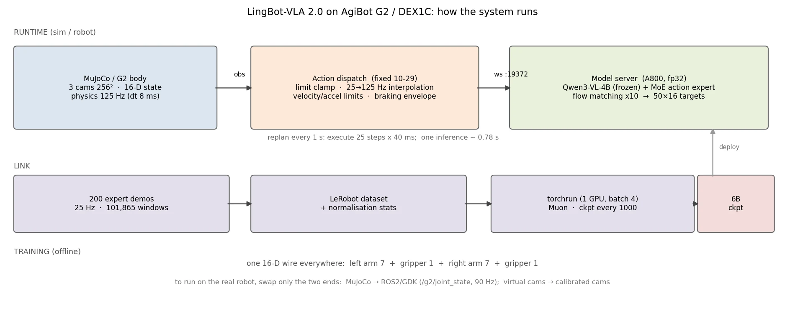
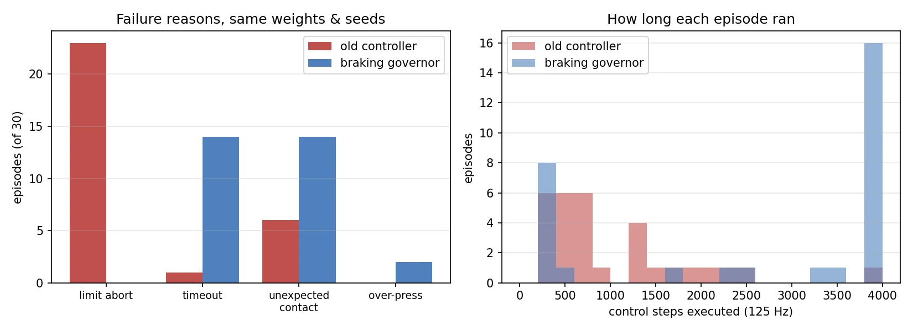
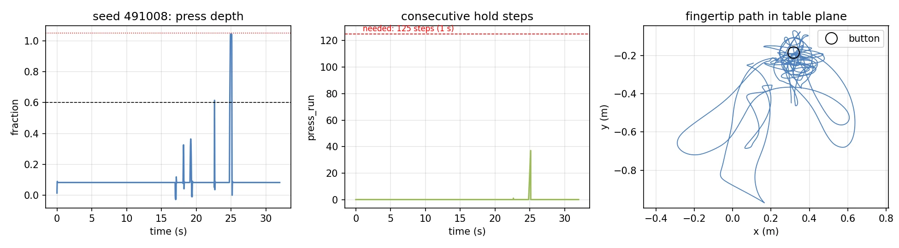
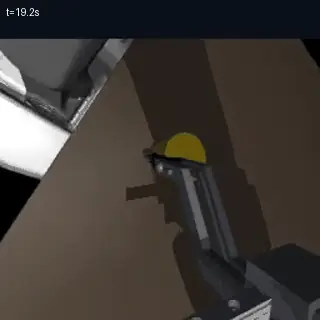
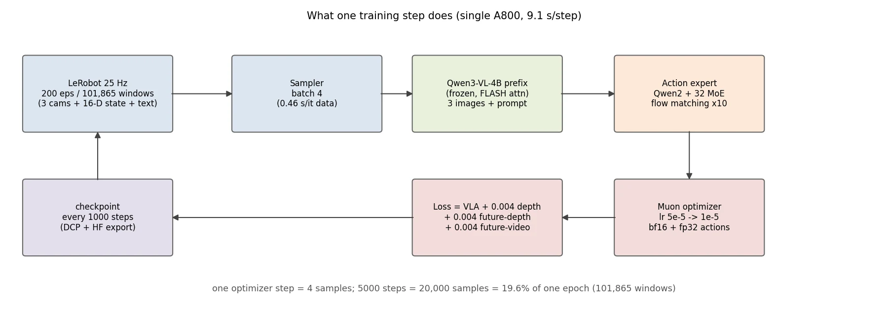
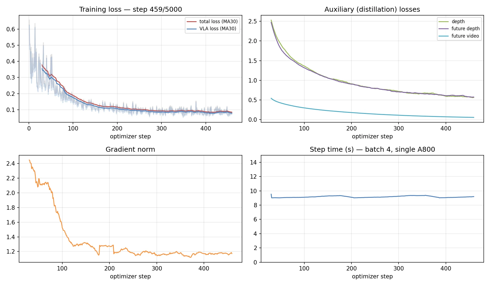
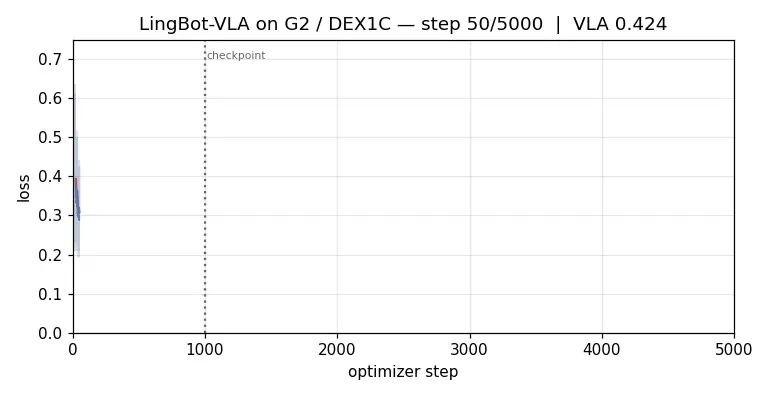
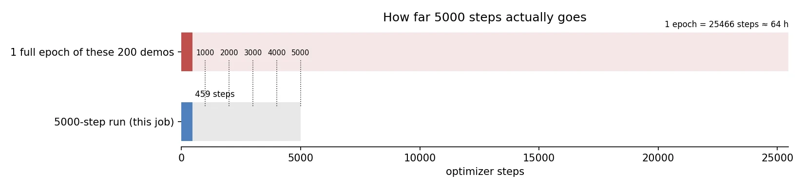

NOTE 14 / 工程复盘 · 训练与评测
把 VLA 装进 G2：一次 0/30 的排障
三十个回合全部失败。但拆开看，其中二十三个不是模型的问题——是控制层在模型还没犯错时就先把指令拦下了。
这是一次微调训练期间的记录：任务没成功，但评测终于变得可信。前半段讲为什么原来的 0/30 不能作为结论，后半段讲修好之后 0/30 意味着什么。
范围。全部为 MuJoCo 仿真与虚拟相机，未接真机、未标定、未部署。成功率数字只代表当前场景与协议。
1. 目标与系统
任务很具体：让 LingBot-VLA 2.0 在 G2 上完成「按黄色按钮 → 保持 1 秒 → 抬离释放」。先在仿真跑通，再谈真机。
系统分三段跑。
运行时：MuJoCo 里搭 G2、DEX1C 夹爪、桌面按钮，三路相机（头部加双腕，256×256），16 维本体状态，物理步长 125 Hz。
动作下发层：模型以 25 Hz 给出目标关节角，插值成 125 Hz 指令再下发，中间做限位、限速、限加速度。
模型服务：单卡 A800 跑 6B 模型，Qwen3-VL-4B 主干冻结，加 MoE 动作专家，flow matching 十步积分，走 websocket，单次推理约 0.78 秒。
一个关键设计是：全链路只有一种 16 维 wire——左臂七、左夹爪一、右臂七、右夹爪一。仿真和真机只替换两端，中间层不用改。

2. 模型是怎么加载的
不是换一个 checkpoint 那么简单，加载顺序决定它能不能跑起来。
先给 Qwen3-VL 打一个适配补丁，让它能被 VLA 复用；再从训练 run 的配置里读参数（不是 ckpt 里的 config.json），合成 VLA 配置；然后把文本与视觉两部分的配置合并进去；接着建 6B 骨架，用严格模式把六个分片合并加载——少一个 key 直接报错，不会静默用随机权重顶上；推理用 fp32，并切到 eval 模式。
最后是每回合 reset 时才装的「机器人方言」：按 robot config 与归一化统计建一个特征变换，把 16 维 wire 路由进模型约定的 14 维双臂位置加 2 维夹爪位置。
动作生成本身是 flow matching：一次前向拿到视觉语言部分的 KV，再做十步积分，输出 50×16 的绝对关节目标。
3. 事故：0/30 里，23 个是被「尺子」杀的
最新一轮三十回合评测，零成功。但把失败原因拆开，二十三个回合是控制层主动中止的，不是策略失败。
中止的原因叫越限：下发指令超过了关节限位。超了多少？0.24 到 5.3 毫弧度，中位 1.7 毫弧度，大约 0.1 度。
0.1 度听着像浮点误差。但看另一面：那个瞬间关节离边界只剩 4 毫弧度，而当时速度是 0.55 弧度每秒，按 3 弧度每二次方秒制动，需要 50.8 毫弧度的刹车距离。差了整整一个数量级——它根本刹不住。
还有一条更直接的证据：二十三次拒绝里，有十次模型的原始预测从头到尾都没越界。越界是插值层的动量带出去的，然后被硬检查一票否决。

4. 修法：给动作下发层加制动包络
问题不在「裁剪得不够」，而在「没考虑刹车距离」。位置投影解决不了惯性。
最终方案是在跟踪器上加一层速度包络：
其中 d 是到关节边界的距离，a 取 3 弧度每二次方秒，m 是预留余量（取 1.5 倍最大速度乘控制周期，用来吸收离散化带来的一步误差）。
物理含义很直接：只要速度满足这个不等式，刹车距离 v²/(2a) 一定小于剩余距离 d−m，关节在数学上不可能越界。不是靠事后检查碰运气。
实现上有三个细节值得记下来。
第一，限的是速度设定值，不是速度状态。直接砍状态会额外叠加一次 a·dt 的减速，实测加速度会从 3 翻到 6。
第二，贴着包络走时，速度天然比「下一步的上限」高约 a·dt（两边都按 a 下降），所以要给一个 a·dt 的松弛，否则会把可行状态误判成不可行。
第三，对于已经来不及刹的状态（旧控制器留下的），以最大减速度制动并打上标记，而不是静默裁剪。
回归测试的做法是把三十回合里被拒的二十三条动作块存成 fixture：新控制器下零越限，旧实现必须仍然失败——否则这个测试证明不了任何事。种子 491000 那个 0.000244 弧度的越界被精确复现。新增十四项测试，全仓库八十七项通过；旧路径保持逐位一致，用一百组随机用例验证过，专家回放的可比性没有被破坏。
5. 复评：从五秒被杀到跑满三十二秒
同一份权重、同三十个种子，换控制器再跑一遍。
| 指标 | 旧控制器 | 制动包络 |
|---|---|---|
| 越限中止 | 23 | 0 |
| 成功 | 0/30 | 0/30 |
| 跑满三十二秒的回合 | 1 | 14 |
| 曾碰到按钮的回合 | 3/30 | 16/30 |
| 最长连续按压 | 27 步 | 37 步（需 125） |
| 指令越限 | 23 | 0 |
| 指令加速度峰值 | — | 3.0 rad/s²（限内） |
成功率还是零。但这次的零是真实的：失败原因终于可读，超时十四个、撞桌等意外接触十四个、按压超程两个。
最好的一个回合（种子 491008）是这样的：压到了 1.045 的行程，超程判负；连续保持 37 步，离要求的 125 步还差得远；指端在桌面上大幅游走。


结论因此变得清楚：模型能找到按钮，也能压下去，但保持不住一秒，深度也压不准。瓶颈从控制层回到了策略本身。
6. 训练过程可视化
现在的训练是「把两百条示范训满一点」：五千步、batch 4、单卡 A800，约 9.1 秒一步。

实时曲线，截至第 459 步：总损失从 0.66 降到 0.08，前一百五十步下降最陡；三个蒸馏辅助项同步收敛；梯度范数从 2.4 降到 1.2，没有尖峰；步时稳定在 9.1 秒，数据加载没有卡顿。


五千步走了多远？按当前 batch 与采样配置，两百条示范的一个完整 epoch 约 25,466 步、六十四小时。五千步相当于五分之一个 epoch，也就是两万个样本。

所以这只是一次「训练量够不够」的判定实验，不是最终训练。
还有一条必须说清楚：损失降到 0.08 不代表策略变好。上一轮训到一千步时损失已经到 0.042，闭环仍然是 0/30——两百条数据已经被背下来了。真正的判据只有闭环成功率。
7. 现在在哪，下一步
| 级别 | 目标 | 现状 |
|---|---|---|
| G0 | 尺子可信：评测能测到真实行为 | 已达成，越限中止清零 |
| G1 | 单任务学会：三个固定场景三十回合至少二十七成功 | 0/30（真实） |
| G2 | 泛化：十个验证加二十个新种子至少七成 | 未开始 |
| G3 | 真机：二十次至少十四成功 | 未开始 |
接下来四件事：把两百条训满一个 epoch，三档检查点分别复评；用未使用过的新种子块做最终结论，已用过的种子只做回归；如果训练后仍大量撞桌，补针对性数据（贴桌、侧向偏移、恢复轨迹）而不是盲目加量；真机等 G1 通过再启动。
8. 边界
全部为仿真与虚拟相机，未接真机、未标定、未部署。0/30 是当前真实水平，不宣称部署成功。训练损失与离线指标都不能替代闭环成功率。
相关笔记：一次完整抓取（八步时序与失败归因） · 把大模型放在闭环外面（评测与训练量的关系） · LingBot-VLA 2.0 原理（模型内部结构）